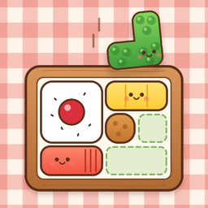

おかず詰めパズル
おかずをお弁当箱につめて、列をそろえるパズル（iPhone）
遊び方
決まった順番で出てくるおかずを、指でお弁当箱へはこびます。たてかよこが1列そろうと、おかずを「ぱくっ！」と食べて消えます。目標（列を消す・ごはんを食べる など）をやりとげたらクリアです。
- まわす：おかずをタップすると90度まわります（鍵のついたおかずは回せません）
- ステージ：全100ステージ・10章。ごはん・バラン・小皿・こおったおかずなどのしかけが出てきます。のこしたおかずが多いほど ★ がふえます（★1〜3）
- 今日のおべんとう：毎日かわる大きなお弁当です（だれでも同じ問題）。点数でランキングに参加できます
- もどす・ヒント：「もどす」は1ステージ3回、「ヒント」は1ステージ1回まで無料です。そのあとは動画広告を見ると使えます（見るかどうかは選べます）
よくある質問
おかずが入らなくなった
「あらら…」の画面から、1つもどしてやりなおせます。「つぎ」に、このあとのおかずの順番がぜんぶ出ているので、先を読んでつめてみてください。
途中でやめたい
左上の一時停止ボタンから、つづける・やりなおす・もどる を選べます。
音を消したい
画面右上のスピーカーのボタンで、音のオン・オフを切り替えられます。
次のステージが選べない
ステージはクリアすると次が開きます。
記録を消したい・引き継ぎたい
記録はこの iPhone の中に保存しています（ランキングに名前をのせた場合は、ニックネームと記録だけを送ります。ランキングの画面の「ランキングから自分の記録を消す」でいつでも消せます）。アプリを削除すると記録も消えます。ほかの端末への引き継ぎにはまだ対応していません。
お問い合わせ
不具合やご要望は、メールでお知らせください。お使いの iPhone の機種と iOS のバージョンを書いていただけると助かります。